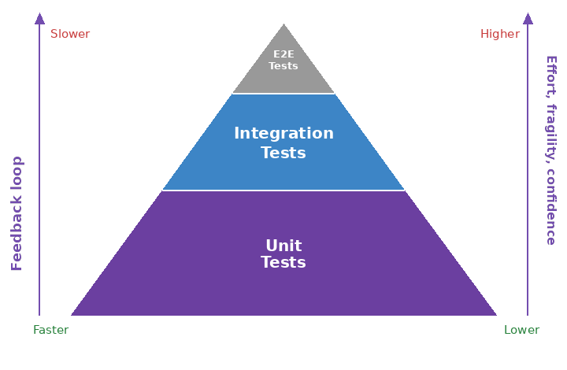
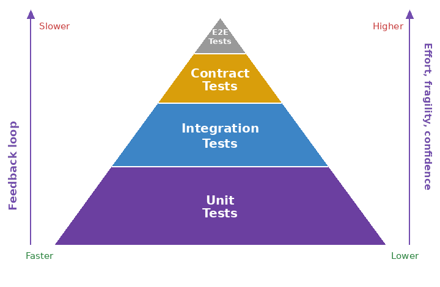

Contract Testing in Microservices: Beyond E2E
Consumer-driven contract testing has matured from an interesting idea into a production reality. I have run Pact across microservice teams in anger for over two years now, and I have formed some strong opinions about where it belongs, what it solves, and, more importantly, what it does not solve.
The standard conversation about testing microservices tends to oscillate between two poles. At one end sit the teams that insist on comprehensive end-to-end tests covering every integration path: slow, brittle, expensive. At the other end sit the teams that trust their unit tests and shrug at the HTTP layer: fast, but dangerously naive about contract drift. Contract testing offers a third way that is pragmatic in theory but demands an organisational discipline most teams underestimate.
I have written about contract testing briefly before, in the context of the Develop and Integrate stages of the DevOps lifecycle. This article goes deeper. It makes the case for where contract testing belongs in the pyramid, where it does not belong, and what it costs to make it stick.
Where exactly does contract testing fit into the testing landscape, and why are so many teams getting it wrong?
What Contract Testing Is (And Is Not)
Before making the case for where it belongs, I want to be precise about what we are discussing.
Consumer-driven contract testing is a pattern in which each consumer of a service documents the subset of the provider's API that it actually uses. The consumer writes a test that verifies its requests are handled correctly. The provider runs those same tests against its implementation to ensure it honours the contract. The load-bearing word here is consumer. The contract is defined by the side that needs the data, not the side that produces it. The service describes what it needs, not what the provider thinks it should offer. Martin Fowler's article on consumer-driven contracts remains the canonical reference for the underlying idea.
Pact, the open-source framework, makes this concrete. It intercepts HTTP interactions, records them as JSON contract files, and lets you replay those interactions against both consumer and provider. The consumer test says: when I POST this to /orders, I expect back a 201 with this shape of body. The provider test says: I will replay all such requests from all my consumers and ensure they work.
This is not end-to-end testing. You are not spinning up a full microservice mesh, running through a business scenario from start to finish, and watching data flow. You are testing contractual boundaries between two services in isolation.
It is also not a replacement for unit testing. A contract test verifies that a consumer's assumptions about a provider's API are correct. It says nothing about whether the consumer's business logic is right, or whether the provider's internal implementation is sound. Both still need their own unit tests. If you are using outside-in TDD to drive your service implementations, contract tests slot in as your outer-loop acceptance tests, with classic unit tests in the inner loop.
The Standard Test Pyramid is Missing a Layer
The classical test pyramid, popularised by Mike Cohn, stacks testing by speed and isolation. A large base of fast unit tests. Fewer slower integration tests. A small peak of slow end-to-end tests.

This model has served us reasonably well. In the microservices era, however, it obscures an important distinction. A unit test knows nothing about API contracts. An end-to-end test knows everything but is slow and fragile. What we need is a layer that tests the contract between services without the brittleness of full end-to-end scenarios.
The refined pyramid looks like this:

The contract layer sits between integration and end-to-end. It is:
- Fast: no full service instantiation, no network latency, just request and response replay.
- Isolated: each pair of services has its own contract, so failures are localised.
- Precise: you test exactly what each consumer needs, not a broad slice of the API surface.
- Shareable: the contract file is the source of truth, executable by both sides.
The layer names matter less than the principle. There is a distinct type of testing, namely boundary verification in isolation, that is faster than end-to-end, more precise than broad integration tests, and more meaningful than a unit test. Contract testing fills that gap.
Most E2E Tests Should Be Replaced, Not All
This is where I risk sounding absolutist, so let me be careful. Contract testing should replace most end-to-end integration tests in a distributed system, but not all.
The tests that contract testing makes redundant are the happy-path integration tests. The ones that say "consumer A calls provider B, gets data in the expected shape, and both services are happy". These tests run slowly, they are brittle (they fail when deployment details change rather than when contracts actually break), and they are expensive to maintain across a large microservice estate.
Contract tests are better at this job. They run in seconds rather than minutes, they fail when contracts genuinely drift, and they run on every commit rather than only in staging or pre-release.
There are scenarios where contract tests are insufficient on their own:
- Systemic workflows. When a single business action requires a chain of five services (consumer to A, A to B, B to C, C to provider), you need to verify the end-to-end flow. Contract tests verify each link in isolation, never the chain as a whole. If service B is down, contract tests will not catch it because there is no B in the contract replay. You still need an end-to-end test that walks the whole path, at least for the critical user journeys.
- Cross-cutting concerns. Distributed tracing, circuit breakers, and observability are rarely caught by contract tests alone. If you want to verify that a circuit breaker opens correctly when a downstream service degrades, you need a scenario where you can inject latency or errors. A contract test sees only happy paths.
- Deployment and infrastructure. Contract tests run against code. They do not verify that your containerisation, orchestration, or DNS is correct. An end-to-end test that actually deploys to your target environment, even a staging environment, catches whole categories of issue that unit and contract tests cannot.
The pragmatic approach is to use contract tests as your primary line of defence for service boundaries, and keep a small set of end-to-end tests for the scenarios contract tests cannot cover. In practice this often means one end-to-end test per critical user journey, plus one for each systemic workflow that genuinely requires multiple services to participate.
Consumer-Driven Contracts in Practice: The Discipline Tax
The theory is clean. The practice is rougher. I have watched teams adopt Pact with enthusiasm, only to hit a wall six months in because of organisational barriers they did not anticipate.
The core problem is that contract tests only work if both sides of the contract are committed to maintaining them. If a consumer publishes a contract but the provider ignores it, you get the worst of both worlds: the overhead of contract testing without the benefit of early detection.
Here are the traps I have watched teams fall into.
The unilateral contract
You write a contract test as a consumer. Your order service expects the payment service to return a specific JSON shape. You run it. It passes. You move on.
Six months later, the payment team refactors their endpoint for internal reasons and adds a new field, processedAt. Your contract test still passes because the existing shape is compatible, but you are now silently relying on behaviour that is no longer guaranteed. If they remove processedAt in a later release, your tests will not catch it because the payment team never ran your contract.
The solution is a Pact Broker, a central repository where contracts are published and the provider explicitly subscribes to them. This requires organisational buy-in. Someone has to run the broker. Both teams have to agree that contract tests are non-negotiable for releases. Many organisations are unprepared for this level of discipline.
The fragmented contract suite
You have eight microservices. Service A publishes contracts expecting B, C, and D to honour them. Service B publishes contracts expecting A, C, and E to honour them. Nobody has a clear picture of the contract graph.
When B changes, it might break A's contract. But nobody runs A's contract tests against B's new code until integration testing, by which point the change has already been committed. The benefit of consumer-driven contracts, which is catching issues early, evaporates.
The fix is a clear contract ownership model. Specify which teams own which contracts, enforce contract checking in CI/CD, and regularly audit the contract graph to spot weak points. This is organisational work, not technical work.
The test-and-pray pattern
Teams write contract tests but do not have a feedback loop when contracts break. The provider publishes a breaking change. The consumer's contract test fails in CI. But the consumer team is heads-down on another feature, so they do not notice until the provider's code lands in staging and a full integration test fails.
Contract tests are only valuable if they are enforced. A breaking contract should block a release, or, at the very least, trigger a synchronous notification to the affected teams. Some organisations use Pact Broker webhooks to do this. Others use a simpler model where contract test failures fail the build and require an explicit signoff to override.
The "too many contracts" decay
Once you have a Pact Broker, contract proliferation becomes tempting. For each tiny variation in API usage, somebody writes a new contract. After a year, you have 150 contracts covering three services, and nobody can explain why there are five different contracts for creating an order.
Contracts should be meaningful. They should represent genuine integration points that the business cares about. A useful heuristic is one contract per business capability or API resource, not one per test case. If you find yourself writing a new contract just to test an error path, that probably belongs in the consumer's unit tests, not in a contract.
The organisational prerequisite
All of this boils down to one thing. Contract testing only works if your organisation has clarity about service boundaries, explicit API contracts, and enough discipline to treat contracts as a shared responsibility.
In my experience, this requires:
- A dedicated person or team who understands the contract graph and ensures it stays sane. Ownership matters.
- A written standard for what goes into a contract and what does not. Should you contract on response times? On error cases? On deprecated fields? Make it explicit.
- Enforcement mechanisms in CI/CD that prevent a release if contracts are broken. Not optional. Not advisory.
- Regular audits. Every quarter, walk the contract graph. Look for contracts that nobody references, orphaned consumers, and services that are breaking contracts they do not know about.
Teams that skip this foundational work often find that contract tests become a tax rather than a benefit. They have to maintain contracts, but the contracts are not actually preventing bugs because nobody is taking them seriously.
Putting It Together: A Pragmatic Testing Strategy
If I were setting up testing for a new microservice estate today, here is how I would use contract testing across the layers:
- Layer 1: Unit tests. Fast, many, covering business logic and edge cases. These run for every commit. No contracts, no external dependencies.
- Layer 2: Contract tests. Fewer, still fast, covering the subset of each service's API that is actually consumed by other services. These run for every commit and are enforced in CI. A contract failure blocks a release until it is resolved or explicitly waived.
- Layer 3: Integration tests. Optional and rare. These might test internal integration within a single service, for example your API layer talking to your database, or verify behaviour that contract tests cannot, such as timeouts, retries, or rate-limit responses.
- Layer 4: End-to-end tests. A small set, covering critical user journeys and systemic workflows that require multiple services. These run in a staging environment, not on every commit, because they are slow and brittle. Failures trigger human investigation.
- Layer 5: Monitoring and observability. The final layer, often forgotten in the testing conversation. Real production data is the most honest test. Invest in metrics, tracing, and alerting.
The cost-to-benefit ratio improves as you move down the pyramid. Contract tests sit in the sweet spot. They are cheap to run, with a high signal-to-noise ratio, but they require organisational discipline to be effective.
Summary
Contract testing is not a silver bullet. It is not a replacement for all other testing. It is not something you can adopt in isolation without organisational alignment.
For teams willing to pay the discipline tax, however, it offers something genuinely valuable: a fast, precise, shareable way to verify service boundaries without the brittleness of end-to-end testing. It refines the test pyramid by inserting a layer that was previously missing. And it forces conversations about API design, versioning, and compatibility that many teams avoid until those conversations become crises.
The pragmatic stance is this. Use contract testing for the happy-path integrations. Keep end-to-end tests for the scenarios it cannot cover. Be honest about the organisational work required to make it stick.
Of course this is my view based on my experience and your views may be different. I'm open to expanding my view and if you feel that you have some insights worth sharing please contact me to continue the conversation.